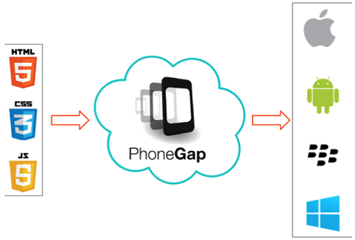

PhoneGap
Oliver Almaguer Abril 2018
Historia de PhoneGap

Inicialmente, fue desarrollado por Nitobi bajo licencias de software libre, pero para Octubre de 2011 Adobe anunció oficialmente la adquisición de Nitobi, pasando, así PhoneGap al control del gigante del software, gran interesado en la evolución de HTML5. Esto generó una gran incertidumbre entre los desarrolladores, pues el framework podía pasar a ser una tecnología propietaria, pero en una genial estrategia, Adobe donó PhoneGap a la fundación Apache, conservando de esta forma la integridad libre de PhoneGap.
En la actualidad, el proyecto en el sitio web de la fundación Apache esta nombrado como: "Apache Cordova", pero PhoneGap sigue siendo una especie de marca comercial, por lo que aún se sigue usando ese nombre para identificar al popular framework- Puedes encontrar más información de PhoneGap en la siguiente dirección www.phonegap.com, donde podrás descargar la última versión del framework que al escribir este artículo es la 1.7.0.
PhoneGap también es compatible con frameworks de desarrollo web móvil como jQuery Mobile, Sencha Touch, Dojo, jQTouch, SprountCore, GloveBox, XUI, iScroll, entre otros.
Oliver Almaguer - Abril 2018
Qué es Phonegap

Phonegap es un framework creado por Nitobi, el cual ahora es propiedad de Adobe, este brinda la posibilidad de desarrollar aplicaciones multiplataformas o híbridas de manera gratuita utilizando las tecnologías web como Html5, Css3 y JavaScript, también nos permite integrarlo con Jquery Mobile y muchas otras librerías que se requiera integrar a un proyecto. Las aplicaciones híbridas llevan una gran ventaja sobre las nativas, y esto se debe a que pueden ser usadas en cualquier dispositivos inteligentes, aunque estos posean diferentes sistemas operativos, lo cual es la principal desventaja de las aplicaciones nativas.nt
Oliver Almaguer- Abril 2018
Caracteristicas

Características PhoneGap. PhoneGap es un framework para el desarrollo de aplicaciones nativas de sistemas operativos móviles, haciendo uso de tecnologías web como HTML5, CSS3 y JavaScript. Con PhoneGap es posible desarrollar aplicaciones para los siguientes sistemas operativos: Android iOS Windows Phone BlackBerry OS Web OS Symbiam Badat
Oliver Almaguer - Abril 2018